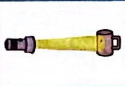

五年级上册科学知能训练
第一单元 光
1. 有关光的思考
P1
探究目标
认识光源。是否能够看到完全黑暗环境中的红苹果?尝试做出解释。
探究过程
一、对光的认识
- 你对光有哪些了解?
- 光可以让我们看到周围的东西。如果没有光，世界就会一片黑暗，什么都看不见。
- 光有不同的颜色，像彩虹就有红、橙、黄、绿、蓝、靛、紫七种颜色。这些颜色混合在一起就变成了白色的光。
- 光沿直线传播，就像我们在阳光下看到的影子，就是因为光沿直线传播，被我们的身体挡住了，所以后面就形成了影子。
- 光的强度也有不同，比如太阳的光就很强，而手电筒的光相对就比较弱。
- 你见过哪些能够自己发光的物体?它们都是光源吗?
我见过的自己发光的物体有太阳、电灯、蜡烛、萤火虫。它们都是光源。- 太阳是一个非常大的光源，它发出很强的光，照亮了地球，让地球上的万物生长。
- 电灯是我们家里常用的，打开开关它就会发光，这样我们就能在晚上看到东西了。
- 蜡烛燃烧的时候会发光，在停电的时候可以用来照明。
- 萤火虫也很神奇，它的身体能发出微弱的光，在夏天的夜晚看起来非常漂亮。
二、对“黑暗中的红苹果”的思考
我们能看到完全黑暗的房间中的红苹果吗? 我的猜测:
- 完全看不到。
- 眼睛适应黑暗后可以看到。
- 眼睛适应黑暗后可以看到红苹果的影子。
我的猜测是完全看不到（选择1）。
我的解释
因为我们能看到物体是因为有光照射到物体上，然后物体反射光进入我们的眼睛。在完全黑暗的房间里，没有任何光线去照射红苹果，红苹果也就不能反射光，所以我们的眼睛无论怎样都接收不到来自红苹果的光，也就完全看不到红苹果。而且影子是因为有光照射到物体上，物体挡住了光才形成的，没有光就不会有影子，所以即使眼睛适应了黑暗也看不到红苹果或者它的影子。
P2
探究加油站
夜视仪
在光照充足的环境中,我们能清晰地看到物体;在光照不足时,我们看物体就会模糊,甚至看不到。
夜视仪可以帮助我们在光照不足环境中观察物体。夜视仪能收集环境中人眼看不到的微弱光线,再通过内部的图像增强系统把光线转换为电子信号放大。被放大的电子信号输出到图像显示设备上,成为人眼可见的图像。
夜视仪为我们在黑夜中观察世界提供了帮助。
探究接力棒
将下列物体分类并填写在相应的方框中。(填序号) ①太阳 ②木星 ③月亮 ④燃烧的蜡烛 ⑤金鱼 ⑥萤火虫 ⑦汽车后视镜 ⑧亮着的灯泡 ⑨玫瑰花
光源: 1, 2, 4, 6, 8
非光源: 3,5,7,9
2. 光是怎样传播的
P3 探究起跑线
探究目标
猜测并验证光的传播方式。
探究过程
一、准备 手电筒;四个能立起来的夹子;四张长方形卡纸,其中三张在 同一位置打一个直径为1厘米的小孔,一张为屏。
二、实验与记录
- 用夹子固定卡纸,直立于桌子上。尝试摆一摆,使得通过这三个小孔可以看到后面的物体。
- 根据上述的操作,我猜测光的传播方式是: 直线传播
- 验证实验:用手电筒进行实验,画出光的行进路线,标出光斑的位置（在第四张卡纸上）。
这说明：光在均匀介质中是沿直线传播的。因为只有光沿直线传播，才能依次穿过三个在同一位置打孔的卡纸，最终在最后一张卡纸上形成光斑。 - 保持其他条件不变,把中间的一张打孔卡纸向左或向右移动2厘米,画出光的行进路线,标出光斑的位置（在移动的那张卡纸上）。
这说明：光沿直线传播的路径是固定的，当中间的卡纸（介质）位置发生改变时，由于光的直线传播特性，光不能再沿着原来的直线传播路径穿过小孔到达原来的位置，所以光斑的位置发生了改变，再次证明了光在均匀介质中是沿直线传播的。
P4 探究加油站
“只闻其声,不见其人”
我们在幕布前,能够听到幕布后说话人的声音,却看不见说话的人。为什么会发生这种“只闻其声,不见其人”的现象呢?
我们知道,声音是由振动产生、以声波的形式传播的,空气、液体、固体都能传播声音。我们能够听到幕布后的人讲话的声音,是因为空气和幕布都能传播声音。
光是以电磁波的形式传播的,当光遇到不透明物体时,其传播会受到阻碍。光无法通过不透明幕布继续传播,因此我们看不到幕布后说话的人。
正是因为声音的传播特点和光的传播特点不同,才会有“只闻其声,不见其人”的情况发生。
探究接力棒
利用生活中的物品,设计实验,证明“光是沿直线传播的”。
实验材料
选择下面哪些材料？
直吸管 弯吸管 直水管 弯水管 手电筒 激光笔 其他:
答：我选择直吸管、直水管、手电筒。
实验过程
我的实验方法？
- 在黑暗的环境下（可以拉上窗帘，关闭灯光），将直吸管一端对准手电筒的光源，从吸管的另一端观察光线。
- 然后，将直水管一端对准手电筒的光源，从水管的另一端观察光线。
我观察到的实验现象？
- 当用直吸管时，可以看到手电筒的光从吸管的一端直线传播到另一端，在吸管的另一端能看到一个明亮的光斑。
- 当用直水管时，同样能看到手电筒的光沿着水管内部直线传播，在水管的另一端也能看到光斑。
我的解释？
光是沿直线传播的，直吸管和直水管内部都提供了相对均匀的介质环境。当光线从一端进入时，由于光沿直线传播的特性，它能够在不发生弯曲的情况下，直接到达另一端并形成光斑。而如果是弯吸管或者弯水管的话，光线就无法沿着弯曲的通道直线传播到另一端，这就进一步证明了光是沿直线传播的。
3 光的传播会遇到阻碍吗
P5 探究起跑线
探究目标
了解光在传播过程中遇到不同阻碍物时的传播差别。
探究过程
一、光照射玻璃、纸和书
| 操作方法 | 实验装置示意图 | 光能否穿过物体 | 你能否看清杯子细节 | 其他发现 |
|---|---|---|---|---|
| 打开手电筒,直接照射到杯子上 | 图1 | / | 能 | 光线直接照射，没有阻碍，亮度最强 |
| 用干净的透明玻璃片遮住手电筒 | 图2 | 能 | 能 | 玻璃透明，对光的阻碍较小，光斑位置基本不变，亮度略有减弱 |
| 用一张纸遮住手电筒 | 图3 | 部分能 | 部分能（较模糊） | 纸有一定的透光性，但会使光线散射，光斑变大且亮度减弱很多 |
| 用一本书(或厚纸板)遮住手电筒 | 图4 | 不能 | 不能 | 书或厚纸板对光的阻碍很大，几乎完全阻挡光线，没有光斑形成 |

- 玻璃、纸和书在透明度上的区别：
- 玻璃的透明度很高，几乎可以完全透过光线，对光的传播阻碍非常小。
- 纸有一定的透明度，但是远低于玻璃，它只能让部分光线通过，会使光线发生散射等情况。
- 书（或厚纸板）的透明度极低，几乎不透明，对光的传播有很强的阻碍作用，几乎完全阻挡光线通过。
- 光斑的位置、大小和亮度不一样。
- 在直接照射杯子时（无遮挡），光斑位置在杯子上，亮度最强且大小正常。
- 用玻璃遮挡时，光斑位置基本不变（因为玻璃对光的折射影响较小），亮度略有减弱，大小基本不变。
- 用纸遮挡时，光斑位置可能会有轻微偏移（由于纸表面不平整等因素），光斑大小变大（因为光线散射），亮度明显减弱。
- 用书（或厚纸板）遮挡时，由于光几乎不能穿过，所以没有光斑形成，不存在光斑的位置、大小和亮度的情况。
二、光照射烟雾
在透明空水槽中放入点燃的线香,让线香的烟气充满水槽。用激光笔照射水槽(如图),记录观察到的现象。
我观察到了?
答：当用激光笔照射充满烟雾的水槽时，可以看到一条明亮的、直线状的光路。这是因为烟雾中的微小颗粒对光进行了散射，使得原本不可见的激光传播路径变得可见。
我想到了?
答：
- 光在传播过程中，如果遇到微小颗粒等障碍物，会发生散射现象。这些微小颗粒就像一个个小的反射体，将光线向各个方向反射，从而让我们能够看到光的传播路径。
- 这种现象在日常生活中也有应用，例如舞台上的烟雾效果可以让灯光的光线更加可视化，营造出特殊的视觉效果。
- 对比之前光照射玻璃、纸和书的实验，烟雾对光的传播影响与它们不同。烟雾不会完全阻挡光的传播，而是让光的传播路径显现出来，这说明不同物质对光传播的阻碍方式和效果是多种多样的。
P6 探究加油站
看得见的“光路”
一般情况下,我们看不到光传播的路径。但如果你有早起到公园锻炼的习惯,有时你会发现在树木的枝叶间透过一道道光柱,这些光柱就是太阳光传播的路径。在城市里,从高大建筑上发射的激光束也可以让我们看到光传播的路径。
我们能看到这些“光路”,是因为发生了丁达尔效应1。丁达尔效应是英国物理学家丁达尔在1869年发现的。当丁达尔效应出现的时候,光就有了“形状”,让我们看到光是沿直线传播的。
探究接力棒
- 判断对错。
(1) 光在传播过程中遇到透明物体能继续传播。(√)
(2) 在空气中沿直线传播的光遇到物体时,可能发生通过、部分通过和不通过三种现象。（√）
P7
2.读故事,找出有关光的知识,参考样例,画上横线并批注解释。
古代时,有个楚国人,他听说螳螂捕蝉时不容易被发现,是因为用树叶遮住了自己。这个楚国人想,要是能得到这片树叶该多好啊,躲到下面,就可以把自己隐藏起来2。于是,他跑到一棵树下仰望寻找。当他看到一只螳螂攀着一片树叶准备捕捉蝉时,就把那片树叶摘了下来。可是他太激动了,一不小心,这片树叶飘落在地上和落叶混在一起了。他无法分辨哪片树叶是螳螂藏身的,索性将树叶全部收回家。回到家后,他一片一片地用树叶遮住眼睛,问妻子:“你能看见我吗?”开始时妻子一直说:“能看见。”经过了一整天,妻子很不耐烦,便哄骗他说:“看不见了!”3他以为终于找到了那片能藏身的树叶,急忙举着这片树叶跑到街上去,旁若无人,当面拿别人的东西。结果会是怎样呢?结果当然是这个楚国人被当场抓住了!4
4. 光的传播方向会发生改变
P8 探究起跑线
探究目标
通过实验了解光的传播方向是否会发生改变。
探究过程
| 实验方法 | 示意图 | 看到的现象 |
|---|---|---|
| 在杯中装入略带颜色的水5，用激光笔从斜上方照射，使光从空气进入水中，观察现象。 | 图1 | 光在进入水中时传播方向发生了改变，光线发生了弯折。 |
| 把铅笔垂直放置在水杯中，观察现象；再把铅笔倾斜放置，观察现象。 | 图2 | 垂直放置铅笔时，铅笔看起来没有变化；倾斜放置铅笔时，铅笔在水面处看起来像折断了一样。 |
| 调整观察角度，使鱼缸里的一条鱼看上去是两条。 | 图3 | 从特定角度观察，鱼缸中的鱼会出现重影，一条鱼看起来像两条。 |

我的解释？
- 当光从空气进入水中时，由于光在不同介质中的传播速度不同，会发生折射现象，导致光的传播方向发生改变。所以在第一个实验中，我们看到光在进入水中时发生了弯折。
- 在第二个实验中，垂直放置铅笔时，光在同一介质（水）中沿直线传播，所以铅笔看起来没有变化。而倾斜放置铅笔时，光从空气进入水中，在水面处发生折射，使得铅笔在水中的部分看起来位置发生了偏移，就像折断了一样。
- 在第三个实验中，调整观察角度使鱼缸里的一条鱼看上去是两条，是因为光在穿过不同介质（水和玻璃、空气）时发生了多次折射，导致光线的传播路径发生了改变，从而产生了重影现象。
P9 探究加油站
光的折射现象
站在池塘边,我们可以很清楚地看到鱼在清澈的水里游动,但当我们瞄准鱼的方向去捕捉时,却常常扑空。有经验的渔民知道,捕鱼时要瞄准鱼的下方才能把鱼抓到。这是为什么呢?
如图所示,照射到鱼身上的光线反射到空气中时,在水面发生了折射,折射光线进入人眼。根据人眼成像原理,人眼“看”到的“鱼”,是在逆着折射光线的延长线上的,并不在实际折射光线的路径上。因此看到的“鱼”在鱼的实际位置的上方。
同样的道理,由于光的折射,池塘看起来也会比实际的浅,所以即使池塘里的水看起来清澈见底,深不及腰,也绝不可以贸然下水,以免发生危险。
探究接力棒
小魔术:硬币“消失”了
材料： 硬币、透明玻璃杯、水
变魔术：
- 把透明玻璃杯放在硬币上面,从杯子一侧观察硬币的情况;
- 保持观察的角度不变,往杯子里倒水;
- 拿走装水的杯子。
我的发现：
描述你看到的现象,试着分析原因。
现象描述： 一开始，把透明玻璃杯放在硬币上面，从杯子一侧观察硬币，可以看到硬币的部分轮廓。然而，当往杯子里倒水后，继续从相同角度观察，硬币仿佛“消失”了。拿走装水的杯子后，硬币又重新出现。
原因分析： 这个魔术中硬币“消失”的现象同样是由于光的折射引起的。在未倒水时，光线从空气进入玻璃再到人的眼睛，我们能看到硬币的部分轮廓。当向杯子里倒水后，光线从空气进入水中再进入玻璃最后进入人眼，由于水和玻璃的折射率与空气不同，使得光线在经过不同介质的界面时发生了多次折射。在特定的角度下，折射后的光线无法到达人眼，从而造成了硬币“消失”的假象。而当拿走装水的杯子后，光线又恢复了原来的传播路径，硬币再次出现在视野中。
5. 认识棱镜
P10 探究起跑线
“研究光与颜色的关系”探究记录表
探究目标
通过实验,观察了解光与颜色的关系。
探究过程
实验一:让白光通过三棱镜
- 关灯,拉上窗帘,让房间变暗。
- 如图,让一束白光通过三棱镜。
- 描述观察到的现象：当一束白光通过三棱镜后，会在后面的屏幕上或墙上看到红、橙、黄、绿、蓝、靛、紫七种颜色的光带，也就是出现了色散现象。
实验二:快速旋转彩色轮
- 用硬纸板剪一个直径约5厘米的圆,分成三个等大的扇形, 分别涂上红、绿、蓝三种颜色,做成彩色轮。
- 在彩色轮圆心处安装小木棍,或穿上细绳。
- 快速旋转彩色轮,观察现象并描述：快速旋转彩色轮时，会看到彩色轮呈现出白色。
我的解释 实验一：白光是由多种不同颜色的光混合而成的。当白光通过三棱镜时，由于不同颜色的光在玻璃中的折射程度不同，从而被分散开来，形成了七色光带。这表明白光可以分解为不同颜色的光。
实验二：红、绿、蓝是光的三原色。当快速旋转彩色轮时，由于人眼的视觉暂留效应，使得三种颜色的光在人眼中混合在一起，从而呈现出白色。这说明通过混合光的三原色可以得到白光。
P11 探究加油站
彩虹的秘密
雨过天晴,天空中有时会出现美丽的彩虹。
彩虹的形成与光的折射现象有关。雨后,空气中充满着小小的水滴。当阳光照射到这些水滴时,会发生光的折射现象,形成红、橙、黄、绿、蓝、靛、紫的光带,这就是彩虹。
空气中小水滴的大小影响彩虹的明显程度。小水滴越大彩虹越明显。
阳光明媚时,我们可以人工制作“彩虹”。在阳光强烈的地方(最好是室外),背对着阳光,用喷雾器喷水,就可以看到一道人工彩虹。
探究接力棒
- 把三棱镜放在阳光下,地面上出现了各种颜色的光。产生这种现象的科学原理是(B)。
A. 光的反射
B. 光的折射
C. 光的直线传播当太阳光通过三棱镜时，由于不同颜色的光在玻璃中的折射率不同，从而发生折射使得光被分散开来，形成各种颜色的光带，这是光的折射现象。
- 在圆形卡纸上画出三个等大的扇形,分别涂上红、绿、蓝三种颜色,制成彩色轮。当快速旋转彩色轮时,可以观察到（B）
A. 彩色轮看上去是七彩的
B. 彩色轮看上去是白色的
C. 彩色轮看上去是黑色的红、绿、蓝是光的三原色，当快速旋转彩色轮时，由于人眼的视觉暂留效应，三种颜色的光混合在一起会呈现出白色。
- 下列说法不正确的是(B)。
A. 太阳光经过三棱镜后被分解成红、橙、黄、绿、蓝、靛、紫七种颜色
B. 白光是由红、绿、蓝三种颜色组成的
C. 光由空气斜射进入水或玻璃等透明物体时,能发生光的折射白光是由红、橙、黄、绿、蓝、靛、紫七种颜色的光混合而成的，光的三原色红、绿、蓝通过不同比例混合可以得到各种颜色的光，但不能说白光仅由红、绿、蓝三种颜色组成。
脚注：
-
丁达尔效应：当一束光线透过胶体（如烟雾属于气溶胶，是胶体的一种）时，从垂直入射光方向可以观察到一条光亮的“通路”的现象。这是因为胶体粒子对光线散射而形成的，它可以让我们直观地看到光的传播路径，从而验证光沿直线传播等特性。 ↩
-
“有个楚国人,他听说螳螂捕蝉时不容易被发现,是因为用树叶遮住了自己。这个楚国人想,要是能得到这片树叶该多好啊,躲到下面,就可以把自己隐藏起来”: 树叶是不透明的物体,螳螂用树叶遮挡身体,使得光的传播受到阻碍,因此螳螂不容易被蝉看到。 ↩
-
“他一片一片地用树叶遮住眼睛,问妻子: ‘你能看见我吗?’开始时妻子一直说: ‘能看见。’经过了一整天,妻子很不耐烦,便哄骗他说: ‘看不见了!’”: 人能看到物体是因为有光进入眼睛, 因为树叶是不透明的,遮住眼睛后会阻挡光线使自己看不到，但并不没有遮住别人的眼睛和自己身体的其它部位，所以别人还是能看到。 ↩
-
“他以为终于找到了那片能藏身的树叶,急忙举着这片树叶跑到街上去,旁若无人,当面拿别人的东西。结果当然是这个楚国人被当场抓住了!”: 他不明白在正常情况下,不透明的树叶要完全隐藏自己需要完全遮挡住自己的身体，他拿着树叶就以为能隐身去偷东西,完全违背了光传播以及物体可见性的原理,光会从他身体其他没有被遮挡的地方反射进入别人的眼睛,所以他必然会被发现。 ↩
-
略带颜色的水能帮助我们看清光的传播路线。 ↩